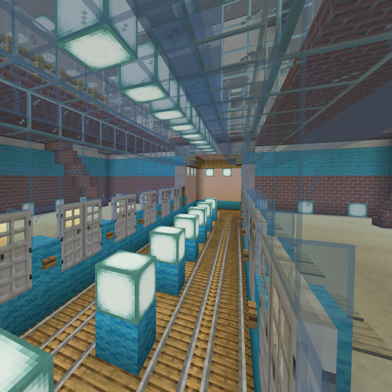
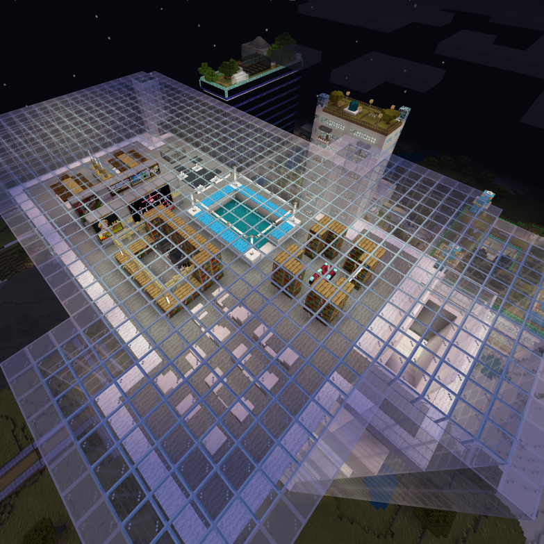

다양한 건물, 특색있는 지하철
하늘마을 맵에 건축된 모든 건물은 모두 다르게 지어졌습니다. 같은 도서관이라도 그 모습이 다릅니다.
5개 이상의 지하철도 마찬가지입니다. 지하철 노선마다 다른 모습을 보여주도록 설계하여, 눈이 즐겁습니다.
외부뿐만 아니라, 내부까지
멋있는 외부를 가진 수많은 도시맵들, 혹시 텅빈 안을 보고 실망하신 적은 없으신가요? 하늘마을 맵은 내부까지 충실하게 구현하여 실제 사용할 수 있는 맵을 목표로 합니다.
이는 하늘마을 맵의 원칙으로, 맵이 계속해서 개발되는 한 내부가 텅 빈 채로 유지되는 건물은 없을 것입니다.

그 외에도 다양한 특징이 있습니다.
무료로 공개되는 하늘마을 맵을 내려받아 당신의 손으로 더욱 발전시켜보세요.
내려받기